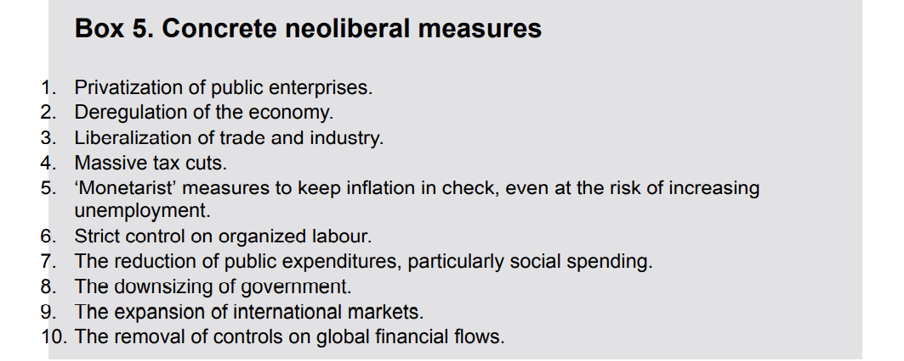

Globalization describes a process, a condition, a system or an age
Globality → Social Condition characterized by tight global economic, political and cultural and environmental interconnections
Global Imaginary → Growing consciousness of the world as a single whole
Globalization → Spatial concept signifying a matrix of social processes that is transforming our present social condition of conventional nationality into one of globality
Globalization refers to the multidimensional and uneven intensification of social relations and consciousness across world-time and world-space
Glocalization and Globalization
Steger’s Different Modes of Globalization -
Embodied → Movement of People and how they pick up various things
Disembodied → Movement of ideas, enabled by ICT
Object extended → Interconnection of places with the connection of objects, say fabricated at one place
Organization extended → Some organizations work and set up rules of the game which make places interconnected. Example: BITS Students
Qualities of Globalization
Involve creation and multiplication of existing connections that cut across traditional political, economic, cultural and geographical boundaries
Expansion and stretching of social relations, activities and connections
Intensification and acceleration of social exchanges and activities
Subjective plane of human consciousness
Dating of Globalization → When globalization started to happen
Advent of ICT
Industrial Revolution
Modernity
It is not a steady, linear process - there have always been both globalizing and localizing tendencies that are exacerbated by different events and processes
We should look it at as a non linear process
Steger’s Thesis on history of globalization
The great divergence - people and social connections stemming from a single origin but moving and diversifying greatly over time and geographical space
Great convergence - different and widely spaced people and social connections coming together more rapidly than ever before
Populism - term that is used to explain the rise of certain leaders who are diverting away from liberal ideas. Example: Putin, Trump, Brazil
Example → European Union
Protectionism → Trump adopted aggressive policies to pamper his supporters
History of Globalization
Some limit it to post 1980s but some also capture the last 2 centuries as part of the same and some refuse to confine globalization to time lines
Prehistoric Period
Global Dispersion
Producing own food
Population increases
Permanent villages and construction of fortified towns
Advanced technology for overcoming geographical and social obstacles were absent
Premodern Period
Invention of writing
Invention of wheel
Allowed people to make calculations for imports and export
Silk road linked chinese and roman empires
Chinese later made decisions to halt overseas navigation
Population increase again
Early Modern Period
British/Dutch East India companies for overseas trade posts
New search routes
Wind and water mills
Extensive postal systems
Revised maritime technologies
Advanced navigation techniques
Modern Period
Telecommunications
Liberalization
Global Institutions
Economic Dimension of Globalization
Global Financial Crisis → Last Peak
World Bank → IRCD
It has accelerated and intensified
Increasingly we are consuming commodities, services and taking up jobs from elsewhere
Commodity, Labor and Capital Dimensions of Economic Globalization
Economic Globalization refers to the intensification and stretching of economic connections across the globe
Patterns of interdependencies
Commodity production, movement and consumption
Labor working conditions and migration problems
Global mobilization of capital
Geographical Unevenness
Height of imperialism - world trade consisted of raw materials going from colonies to imperial production centers
World Wars - Old European powers under massive debt with ruined infrastructure
American economic dominance from late 1940s and 1950s
By 1960s - Japan and Germany began to compete in the manufactured goods market
1971 - US breaks out of the Bretton woods system
After WW2, under the leadership of US and Great Britain, they decided to expand trade
Value of each country’s currency was pegged to a fixed gold value of the US dollar
Labor
Legacy of imperialism made sweat shops to shift to another location
Created collaborative arrangement in Bangladesh
Led to interdependencies
Some countries implemented laws as well
Anti Sweat Shop movement → When people are trying to raise objections to the very nature of sweatshops, the pictorial representation sorta goes into racism
3 Most significant dynamics
Internationalization of Trade and finance
Increasing Power of Transnational corporations and large investment banks
Role of IMF, World Bank and WTO
Internationalization of Trade and Finance
Bretton Woods Regime
IMF → International Monetary Funds → Loans to organizations
IBRD → World bank
GATT → General Agreement on Tariffs and Trade → later became WTO
BWR → golden age of controlled capitalism → Trade and FDI expanded faster than the world GDP
Trade and FDI expanded faster than the world GDP and the share of exports in global output tripled from less than 5% to 16% in 1981
BWR failed when nixon abandoned gold standard → global economic instability
Thatcher and Ronald → Neoliberal Revolution → Neoliberals asserted that releasing private economic activity from govt control would provide lift to world trade, investment
Globalization linked with liberation
Dollar dominance from bretten woods system → Pegging of US Dollar to the gold
Done because US dollar was most stable at that time
Dollar was initially measured in terms of gold
So they suspended dollar pegging in between and slowly bratten woods system disintegrated
Financial Derivative → Derive their value from some other asset and are floated to mitigate the risk
To reduce India’s dependency on imports
Import substitution policy
Make in india
Have problem tried overcoming trying to avoid volatility due to dollar dominance?
Infrastructure and ability to take debts becomes costly
Bilateral trading volumes can be increased and try to shift away from dollar
Say india and asia have a lot of transactions, we can try to move away from dollar
💡
Russia is saying that they have a lot of indian rupees but cannot use it. They didn’t want rupee accumulation
In some places India uses dirham over dollar
BRICS → New Development Bank
It’s an ongoing effort and we check what proportion of oil payments not happening in dollar
BRICS nations are trying to get infrastructure lending at a lower cost
Sovereign Debt Crisis (Greece) → Sri Lanka
Balance of payment crisis
Floods
Breakdown of tourism
Ban of Fertilizers
Decoupling of China and US → US companies are trying to move out of China and moving to countries like India
Chip War between US and China → US is preventing export of chips to China and other manufacturing
Chip war being compared to Oil War. Biden admin is limiting tech exports to china
Netherlands and Japan have agreed to abide by these sanctions which makes it worse for china’s companies over there
Over time interdependencies get generated and it’s hard to get rid of them
We think that all the corporate nucleus is in HQ but that is usually not the case
An important point that led to coupling between China and US is the fact that China joined WTO which opened up more space for China on the global market
The internationalization of trade has gone hand in hand with the liberalization of financial flows.
Its key components include the deregulation of interest rates, the removal of credit controls, the privatization of government-owned banks and financial institutions, and the explosive growth of investment banking.
Globalization of financial trading allows for increased mobility among different segments of the financial industry, with fewer restrictions and greater investment opportunities
Global Economic Volatility
Capital Interdependencies
Financial Crisis displayed that when something crashes in the US economy, it is able to impact all over the world
Displayed that banks are a lot dependent on the US economy
Wars increase volatility → Ukraine war
GFC → Global Financial Crisis
Neoliberalism → Prefer privatization of a lot of institutions
Neoliberal Deregulation → Birth to huge fin services → Derivatives, Financial Futures and Credit Default Swaps
Models predicted profit when you buy an asset in the future at a price agreed in the present
Financial institutions borrowed from each other and sold these loans as securities
Banks gave too many mortgages and in the end when real estate fell → led to GFC
GFC turned into great depression → led to sovereign debt crisis especially in the EU → led to bankrupting Greece
Events in Globalization of Indian Economy
Recognize how many of the inventions and entrepreneurial ambitions of coastal people of india were very important to India
Colonial Conquests in Indian ocean region
Indian economy faced enough volatility after US stopped pegging to gold → Macroeconomic Crisis
Policies changed
Economy opened
India has become an active negotiator in the trading point
Also made various dynamism India’s own projects → DOHA development round
Increased attention towards WTO
US was against PDS system → didn’t let Bali package until India agreed to rules
But India and US went to an indefinite peace clause
If India had followed rejectionist approach, Bali package wouldn’t have gone ahead
Bali Package
First Agreement that is secured through WTO → Approval of all members in 2013, part of DOHA development round
Lowering import tariffs and agricultural subsidies
Duty free quota free market access for least developed countries
Earlier India used to stay away → Increasingly give and take is happening more → unfairly giving concessions to developed world → Now more negotiations are happening
Rejectionist approach → India took during the 1990s to 2002s
WTO → encourage trade and open up trade → tariff should not be disfavoring any group of countries
Most favored nation status (Bringing that country on par with other countries) → We will not impose on that country any tariff more than other countries
Read about Anti Dumping Duty
Growing Power and Range of Transnational Corporations
TNCs are powerful enterprises comprising the parent company and subsidiary units in more than one country, which all operate under a coherent system of decision making and a common strategy
Frequently merge with their competitors
Increasingly global flow of commodities, labor and capital is deeply interwoven with the complex organizational structure of TNCs
Huge Transnational corporations, powerful economic institutions, and gigantic regional business and trade networks like APEC, ASEAN and MERCOSUR and EU have emerged has the major building blocks
Examples → Walmart, Sinopec, Exxon Mobile, Toyota Motor
None of these maintain headquarters outside North America, Mexico, Europe, China, Japan and South Korea
If we substituted revenue for market value, five out of ten TNCs would be headquartered in China
In order to maintain their command posts, most of these go into mergers
Examples → Dow Chemical and Du Point, United Technologies and Raytheon
TNCs are responsible for massive FDIs
Ocean Economy: A lot of companies
Formation of a Cartel System, and are able to participate as political agents
Environmental Degradation
Take away livelihood of small fishermen
Enhanced Role of International Economic Institutions
Other Economic Institutions include
Organization for economic co operation and development - OECD
1960s
Came up at a time when cold war was very intensive
Was working for NATO
Setting global rules for taxing MNCs
Tax Heaven → Countries which allow companies or their accounts to stay in the country with very minimal tax ⇒ On Paper Firms
Apple pays 1.29% tax 😐
India + Mauritius ⇒ Curbing Tax Heaven in Mauritius → Panama Papers →
Alerted civil society organization across the world to tackle the problems associated with global flow of capital
Globalization is not leading to transparent and democratic governance but offering new ways of evading public scrutiny
Infact GIFT City is a tax heaven in India itself
United Nations Conference on Trade and Development
Checking dominance of rich countries on taxation
Make the case for developing countries in the trade negotiations
GSP → Generalized Scheme of Preferences
Regime that UNCTD has successfully opened up markets of Europe
Standard GSP, GSP+ and everything but arms
Asian Development Bank
1960s
Major Promoter → Japan
Right after WW2
Wanted to mobilize capital for infrastructure development in Asian countries
Closely followed world bank in the policies
Asian Infrastructure Investment Bank
Major Promoter → China
Sri Lanka took a loan from China and didn’t make it 🙂, escaped from BRICS got stuck with China
New Development Bank
BRICS → 2014
IMF, World Bank and WTO → privileged position of making and enforcing rules of a global economy that is sustained by significant power differentials between North and South
IMF and World bank were giving loans to developing countries
After fall of soviet union, the economic agenda of IMF and world bank largely supported neoliberal interests to integrate and deregulate markets around the world
Deregulation is the reduction or elimination of government power in a particular industry, usually enacted to create more competition within the industry.
In return for supplying loans to developing countries, the IMF and world bank demand from their creditor nations the implementation of Structural Adjustment Programs
Also referred to as Washington Consensus → mainly directed at countries with larger foreign debts
Purpose of WC was to reform the internal economic mechanisms of debtor countries in the developing world so that they would be in a better position to repay the debts
SAPs rarely produce the desired result of developing the debtor societies because mandated cuts in public spending translate into fewer social programs, reduced educational opportunities, more environmental pollution and greater poverty
Tax Haven Documentary
Bini Coefficient
Rich → supposed to be responsible but are running offshore account games
Netherlands → Most tax treaties in the world → Very low tax rates in IPR
Company can transfer patents to Netherlands subsidiary and also inflate the process to park more money in that place
Pin Stripe Mafia
Tax minimization
Neutral Taxation → No tax → We can’t say that directly
Tax Optimization
Amazon says they pay everything and the judge says you have to pay that infact you are using public finance of almost everyone to make your business and everything
So like the concept is they store money in places where there are very less tax rules
Political Dimension of Globalization
In contrast to Economic Dimension, we deal with
Voting Powers
System of Alliances
Strategic Interests
Intensification and expansion of political interrelations across the globe
Expanding and intensifying
Not emphasizing on the configurations that maybe emerging
Nation State
Decisions taken by a local municipality are being influenced by places all over the world
territory that claims united in comparison to a global audience and has people of same culture together
Idea of culture but always there would be an acceptance that there is no single ethnicity that is binding people
Sri Lanka → Failure of Nation State Idea → Giving up on a public critique → Sinalese nationalism
Has nation state become irrelevant to political decision making in face of increased and intense interdependencies
What forces are working in this direction?
19th century European phenomena that emerges as dominant mode of political decision making through various wars and conflicts
A clear ethnic identity gets associated with a state that exercises sovereign control over a clearly defined territory
Nation, State and Self Hatred - Ashish Nandi Essay
When south Asia started it’s journey → collection of states → One sense a continuation of the project south Asians had given themselves towards the middle of the 19th century
Project was the modernization of the region
Three clear components
Build nation states the way those who then rules south asia had already done in europe
Wanted development
Appreciation of the principles of scientific and technological rationality
Ensure not only national security which states had been doing for centuries but also carry hopes/ambitions
Even 50 years later, we realize the mistake was that we picked it up from books and not from life
As a result, the idea was more purist than that of colonial societies on which it was modelled
Didn’t bother with particulars of state formation and nation building in the continent
These had quasi criminal antecedents
Nation states were built on human suffering and disenfranchisement of large sections of the population
A kind of self hatred comes when we force someone’s ideas onto ourselves
In sri lanka, the august principles of sinhala, the root cause of today’s violence were worked out among others by dhammapala
He devised the model of monocultural sinhala nation and a monolithic domincant sinhala culture → based on hindutva
Only difference was influence of vivekananda’s writings on hinduism
Having trying to improve he ended up making two separate nations → Sinhala and Tamil
They have seen the Indonesian Muslims, who form the largest Muslim country in the world, as peripheral Muslims; Indian Muslims, the world ́s second largest Muslim community, as no better; and, of course, found the fish-eating Bangladeshi Muslims, the world ́s third largest Muslim community, quite obnoxious.
Indonesia also has 2 factions similar to the Sri Lanka
The Japanese are not embarrassed when their census reports that a
majority of Japanese are Shinto and, also, that a majority of them are Buddhist.
But to modern South Asians, such facts are an embarrassment. They would like to see someone either as a Hindu or as a Muslim, because that is the way of European scholarship, and we look at ourselves through its prism.
People end up assuming that everyone else of the same community sort of end up not belonging to that community because they think they are sort of superior
Knowledge should be discovered in people around us but not in books and other places
In other countries, where democracy failed in cases of low education, economic growth and all but it worked in India
This is because, in India, the poor had a larger stake in the democratic system because they wanted to change their state through use of this power
Often, their rates of political participation were higher and they granted greater legitimacy to their political system than the electorate in the “advanced” democracies.
Comfort of Simultaneous Identities → Every one has more than one identity
End result being politicians exploiting the potential of having clear cut self definitions
Rediscover self, lose self hatred and self doubt
How it changed?
Hyper globalists → someone who was pro globalization
Original → Nation state is not relevant → more or less it depends on which ideological faction you belong to
Was the time of disintegration of USSR
Spread of US culture not happening by accident
National Identity Assertion → American democracy
Locus of the shift was with nation state
In globalization if we have s → British sociologist investigating
z was where it emerged as a buzzword
Waning Nation State: Between Hyper globalizers and Sceptics
Hyper Globalizers
Kenichi Ohmae’s (1995) - The end of nation state
National Politics rendered irrelevant by the techno economic considerations of the contemporary globalized world
Political power reside in global economic networks
Friedman’s 1999 - The Lexus and the Olive Tree and 2005 The world is flat
Consider that globalization is read and everywhere → brings about accelerated economic interdependence and intense competition which leads to qualitative economic growth
Sceptics
Globalization is actually accentuating people’s attachment to the principle of nationality
Rapid expansion of global economic activity has happened through the political decisions made by national governments
Jihad vs McWorld - Benjamin Barber 1995
Common
Both are binarizing the world
Both are US Centric
Giddens supports hyper globalizers but says both are wrong → globalization not only economic but also social, political etc and the sole driving force being communication revolution
Migration with respect to Political Globalization - Syria - Arab spring
Relative decline of nation state → does not mean governments have become impotent
States can still take significant measures to make their economies more or less active
States retain control over education, infrastructure and foreign policy
Some challenges for nation state: immigration control, population registration and security protocols
Let us take the syrian refugee crisis
Started in 2010s when Syrian dictator Assad backed by president Vladmir Putin embarked on a confrontational course with pro democracy Arab Spring demonstrators whom he vilified as ‘rebel forces’
Country had a civil war
Humanitarian Crisis
Germany emerged as their preferred place of refuge
Hungary resorted to rather inhumane policies and drastic measures to keep refugees out of their territory
This crisis revealed the inadequacy of the EU’s current institutional immigration arrangements based on national preferences
Schengen Agreement provided for open borders among EU core countries lacked the robustness and comprehensiveness necessary for coping with the crisis situation
Crisis also made visible existing cultural fissures and religious biases
Trump’s government separated a lot of families because of their migration and immigration policies
Intensifying global migration dynamics also play into critical issues of national security
Extra Discussion with Sir - Notes
Government is where states meet to discuss policies and other major decisions needed for the functioning of the state
When we mean state in the nation state context, whole of India counts as a single state and not like we are talking about states separately
In India, we have local/state and the central government levels
Hyper globalizers and Globalization sceptics, Hyper globalizers are people very excited about globalization and these argue that the concept of nation state has been very irrelevant while the globalization sceptics argue that nation state is still relevant to the discussion in hand
Global civil society → it is called civil society because all the organizations here are NGOs and these organizations try to interfere with the civic problems in the world and try to solve them
The difference between government and governance needs a lot of emphasis and this needs to be checked
Political Governance and Global Governance and Global Civil Society
Modi said global governance has failed and UN is being attacked while G20 is being looked at as an alternate
Political globalization is perhaps most visible in the rise of supra territorial institutions
We have to differentiate global governance (stronger reference to the governmental body) whereas global civil society (different from both state and family)
What led to GCS?
Environmental movements
Anti globalization protests
If the idea that people across the world were united in and by certain common concerns formed the first plank of INGO agendas, the corresponding idea was that no one country, no one government, and no one group of citizens could tackle these concerns in abstraction or in isolation from others.
These problems could be tackled only through common endeavors, common strategies, and a pooling of energies. This was more than evident when global NGOs launched a campaign to pressurize governments to draft a treaty to ban the production, the stockpiling, and the export of landmines. Almost 1,000 trans-national NGOs coordinated the campaign through the Internet.
Second issue that global civil society have places on international agenda is the inequitable nature of globalization.
Fight inequality in terms of globalization
By mobilizing against multilateral institutions in particular and globalization in general, INGOs served to foreground imbalances of the world system → battle for Seattle → NGOs and people and workers revolted against WTO’s meeting which was canceled
From Seattle they went to Doha
Globalization from below
First time, hitherto single issue groups combined into a broad based movement to challenge the way world trade and financial system was being ordered by international institutions
Whereas in a lot of places protests targeted state, at Seattle they targeted global corporations and international economic institutions
Third Issue → INGOs established norms on how governments should behave towards their citizens and what is due to human beings by virtue of being human
It was GCS that was raising the issues of CAA and anti CAA movements in India
They set up rules and regulations which governments should go through
India’s approach for solving is always in conflict with the global civil society
To phrase it differently, global civil society actors have inaugurated a normative turn in world politics, which has been traditionally marked by realism and by the politics of national interest and national sovereignty.
In effect, INGOs have established a set of compelling principles which aim to build an
international consensus on how states should or should not treat their own citizens across national borders and territorially bound sovereignties.
Sidestepping of elected representatives in favor of technically sound people is called technocracy
Global civil society—a shared social realm populated by thousands of voluntary, non-governmental associations of worldwide reach
Current framework for emission reduction → Paris framework
Chandhoke Article
Two main criticisms on idea of global civil society
Representativeness
Raises issues of public, wants to make people’s life easier
Most of these representatives and the headquarters are put in specific locations → they have their own POV which changes with respect to the region they come from
Indigenous people - displaced from their home land
Settlers come in and put in their way of living/governance and these issues are very active
The author is trying to compare indigenous people with tribal people in India but how do they know what is the situation and how it works in India
Privileges individualistic and Eurocentric notion of person
She is critiquing the way we are trying to globalize the identity of people
Will not be attentive to the culture specific and place specific value for people
Global governance
Shift from Government to Governance - significant involvement of non-state actors in policy-making and decision-making
Coordination/cooperation/collaboration among transnational actors towards solving problems of global scale
Regional clubs - Asian Pacific Economic Cooperation (APEC), the Association of Southeast Asian Nations (ASEAN), the Southern Common Market (MERCOSUR), and the European Union (EU)
Globalization of urban governance - City governments, firms, and civil society organizations networking across the world to develop strategies
U20 → G20 whatever
Charles Hebdo Cartoon
The cartoon that was very insensitive towards the turkey earthquake deaths
Chat GPT 🙂
The political aspect of globalization refers to how the growing interconnectedness of nations, economies, and cultures is affecting politics and governance around the world. Globalization has led to increased political cooperation and collaboration among nations, but it has also created new challenges for governments and political systems.
One of the primary political benefits of globalization is the increased cooperation and collaboration among nations. With the rise of international organizations such as the United Nations, the World Trade Organization, and the International Monetary Fund, countries are working together more closely than ever before to address global challenges such as climate change, poverty, and terrorism. Globalization has also led to increased trade and investment between nations, creating economic growth and job opportunities.
However, globalization has also created new challenges for governments and political systems. One of the most significant challenges is the loss of control over economic and political decision-making. As multinational corporations and global financial markets become more powerful, national governments often find it difficult to regulate them effectively. This can lead to concerns about the erosion of national sovereignty and democratic accountability.
Globalization has also created winners and losers within and between countries, which can lead to political tensions and social unrest. In some countries, globalization has led to economic growth and greater prosperity, while in others it has resulted in job losses, economic inequality, and environmental degradation. These disparities can create political instability and fuel populist movements that seek to protect national interests and limit globalization.
In summary, the political aspect of globalization is complex and multifaceted. While globalization has led to increased cooperation and economic
Cosmopolitan Democracy
Cosmos → World or encompassing a lot of content
Some cities are described as cosmopolitan 🙂
People from around the world coming to that city
When culture of the city is being inclusive of various communities and this has given us space → Cosmopolitan
Moving beyond movement of people, objects etc.
Features of cosmopolitan democracy by David Held 🙂
A global parliament connected to regions, states, and localities;
A new charter of rights and duties locked into different domains of political, social, and economic power;
The formal separation of political and economic interests;
An interconnected global legal system with mechanisms of enforcement from the local to the global.
Agenda is to create a physical space which is speaking for the world
Create a world constitution which is having a new charter of rights and duties
Politics and Economic interests should remain independent of each other. The separation never actually happens, but sometimes political interests would want to go away from the economic interests so as to display dramatic use of power
1991 Reforms → Economic > Politics
It’s asking for a radical change from local to global interconnected system
Argument is that these are too ideal → Immigration Control → Doesn’t get to implementation
Archie Helo and David held publish a paper every 3-4 years and they keep arguing for cosmopolitanism
Ashish Nandi - Time Travel to a Possible Self: Searching for the Alternative Cosmopolitanism of Cochin
Diversity is there but riots are not there
You hold to your own community but you don’t hold a stereotype against another community
This does not mean that there is no hostility among communities. Nor does it mean that communities do not have their own distinctive written and unwritten memories of past injustices and violence against them.
Place specific hospitality - you are not losing your connect with the community or place and also being open to other communities
How cosmopolitanism may exist in cochin
For Nandi, cosmopolitan means plurality in a place specific hospitality
For held, it is more like we get a democratic place
Virtually every community has its `history' of struggle and believes it to be the best, if not in the world, certainly in Cochin.
Each community sees some communities as good, others as bad.
One comes to suspect that most memories of communal strife are props to a community's self-esteem and self-definition rather than stereotypes having murderous implications.
Whether they can be used at some point to mobilize communities against each other
remains an open question
Fort Cochin has mosques that are hundreds of years old and share the region's distinctive ancient style of Hindu temple architecture and sacred decorative designs;
there are synagogues so unique that at least one has been dismantled and rebuilt by a Malabari Jewish community near Jerusalem. It has become a tourist attraction there.
Having stereo-types and disliking other communities, yet granting them a place in the sun and even the right to dislike and keep distance from one's own community, is obviously one of the building blocks of Cochin's version of cultural plurality.
There has been trade - which made communities interdependent with each other because communities have certain things which they share
There is also a common language
There is also highly literate and urbanized and secular
Critiques the way David Held argued for cosmopolitanism
There are arguments against each of these
For economic interdependencies, this basically means that if a community is good at doing a then it’s not being represented in doing something else
Slides - Nandy’s Alternative Cosmopolitanism from Kochi
Challenges the binary between liberal ideas and traditional institutions
In the 4 points Held wrote, there is a binary between liberal and traditional.
For example, In different parts of India we have different rules for the same land division. That principle was saying to create a new framework where everyone is part of the same
But in nandy’s essay, that does not happen, he tries to say that there is a choice but not that there should be only one rule.
The hospitality that he is asking us to embrace is not being pitted against
Calls for rooted and place specific pluralist practice of being open to various visitors who gradually settle down and become part of the place - in the process transforming both themselves and the place
We can sort of call it decolonial view of cosmopolitanism
Cultural Dimension of Globalization
What is Culture?
Way of living and shared meanings/patterns
Gives meaning to what you are doing
University classroom - Culture
Sites of Exploring Cultural Homogenization and Hybridization
Food
News/Popular Media
Language
Music Films
Living Space
Work Space
Tourist Space
Festivals
Movies
Sports
Cultural Homogenization
Homogenization - sameness, similarity
Americanization - Ways of living inspired from America and is being done very quickly
Has been criticized in many ways - A certain way of living due to whatever institutions have come up have been dominating and displacing culturally rooted ways of living and has been the argument of those who have their own culture
Brazilian Amazon - Has Nike knickers 🙂 - Opting American Culture but the point is similar patterns as this around the world
McDonaldization (George Ritzer) Read more below
Coca Cola replaced the Indian brands using it’s capital power and media (using Hollywood and other American representation)
David Harvey’s Time-Space Compression
Refers to processes that so revolutionize the objective qualities of space and time that we are forced to alter, sometimes in quite radical ways how we represent the world to ourselves
Here space is not same as outer space but relation with people you are around and with
If all of us move outside the classroom → doesn’t mean we lose the classroom space → we are still it the classroom context
Time horizons shorten and space shrinks to a global village
David is sad about this time space compression. He feels that the barriers have cut down and assumes before these technologies came in, it was expansive
One scholar says (Dorran Masse) this sadness is related to the western culture and that people who were colonized were always connected to it
He is critiquing capitalism and saying that the world has become different due to capitalism
Because capitalism is restructuring the society, he says we should go away from it
World sometimes seems to collapse inward upon us
Change is coming into life due to these forces
You are able to be in the same space as Donald Trump because of globalization
Events anywhere will affect the places elsewhere
He also argues that it’s capitalism which has done this → Student of Karl Marx
Shift towards private mode of production → Because of these that these technologies have come to compress the space and time for everyone
In an Indian context, because the capitalist culture has become dominant → time and space has become compressed and has forced us to align with wall street which happens somewhere else
Important Landmarks
First Container Ship in 1956
Introduction of Boeing 747 in 1970
FedEx’s use of computer technology to track deliveries of packages
Use of Universal Product Code in Grocery Stores
Personal Computers
Internet
Social Media + OTT Platforms and Content Consumption but you have to argue that these are coming from capitalist corporations - Counterargument: Is it a large capital sort of force or some kind of rebellion networks or activist networks, for example a lot argue that social news became widely used when it was used for Arab Spring. As in why was social media developed is still a question ?
💡
QR Code - Roland Ronaldson - Glocalization
Emergence of private media is a very good example of capitalist force compressing your time-space compression
Roland Robertson and Francis Fukuyama
Francis explicitly welcomes the global spread of anglo-american values and lifestyle with the desirable expansion of democracy and free markets
We should also note homogenization’s dynamic to acknowledge the existence of powerful sameness tendencies in the world but it is another thing to see that most cultural diversity will vanish
Roland contends that global cultural flows often reinvigorate local cultural niches
Time Space Distanciation - Giddens
“Stretching of social relations across time and space” - Antony Giddens, 1964
Technologies have enabled social relationships that do not depend on the co presence of their participants
What is the key difference with respect to Harvey’s arguments
Harvey was like capitalism is leading to compression but Giddens is saying that there is stretching of social relations
Social Relationship - Interaction with a person on regular basis - not a contractual relationship you make with someone
I think the POV is changing, when we say compressed it’s from a whole POV while in this case when we say stretching, we say from a single person POV
Another difference with Harvey is that Giddens is making a broader point that this is not capitalism that made all this
Video call - not present with you but still present in that part of cultural exchange is sort of called a social relationship
Social is being extended
Ohmae’s End of Nation State
Ohmae goes on to mention that nation-states were once needed to provide the "four I's" of
economic growth: investment, industry, information and individuals.
However, the communications revolution has changed all this. For instance, a firm in an economic region can source its capital in London, locate its industrial plant in Malaysia, tap information from a database in Tokyo and hire individuals in California to design factory layouts.
This has been enabled by computerized information, which when linked to digital communication, has performed what Anthony Giddens would call an intertwining of the local and the global
Ohmae's assertion that the state is losing control of economic activity is backed up by a
more contentious claim: that there exists a globalization ("California-ization") of culture.
Here Ohmae asserts that in those societies open to multimedia, the change has begun. In his words, 'children and teenagers are, at deep levels of sensibility and worldview, becoming much more like their counterparts in other societies similarly influenced than they are like the older
generations within their own cultures
Economic regions should be freed from political influence
Takeaways from Hari Priya’s Lecture
Studying food and being related to disease and diabetes, more like health
How contemporary food practices and notions of healthy body and all this is being mediated by processes of globalization
Cultural Homogenization → People escribing to global food
People demanding same kind of food everywhere
What is considered the diabetic body within the healthcare is itself influenced by globalization
Are we moving back to traditional food?
She left with a question at the last - Is it an example of anti globalization
Jihad and McWorld Concept
May not exactly be anti global, There are global shows and food contests to encourage traditional foods
We have been discussing a more plural way of globalization and so we cannot say it’s anti global
Emerging social and political responses to globalized food and health dynamics (Is it de-mcdonalization?)
What is considered Chinese in Hyderabad and what is considered Chinese in Delhi is not same
Increasing advocacy of local foods in various regions
Flow of rice and rice becoming the traditional food of a region was shaped by globalization
McDonald-ization
Efficiency, Calculability, Predictability and Control
As such, Ritzer builds on Max Weber’s ideas of modern society embracing rationalistic and scientific organization
Sports also is an example of mcdonaldization
Other terms related to americanization
Coca colonization - operations of one MNC and the specific ways it’s able to insert into society, strategies this organization has to set up it’s plants, take control of the local water resources.
Colonization is also a reference to how colonies used to take control and insert themselves into the society
Disneyfication
Walmarting
Has a more scholarly rule in comparison to Americanization
How their burger is same in every McDonalds’ around the world, same quality, quantity etc.
Targeting production processes which has been compared to modernity
Impulse to produce the same in the same exact way
Attack on not using place specific ways of doing the same
Used in comparison to people living the same culture in all places around the world
Still living in scientific rational ways of responding to our needs
In the long run, mcdonalidization amounts to the imposition of uniform standards that eclipse human creativity and dehumanize social relations
Identity Politics - Ashish Nandy
Modern societies have seen riots. The US saw a lot of riots, France also did. Delhi riot is very much a modern riot. But there’s a difference. Riots in the US have predominantly been perpetrated by the blacks and the society there has known that rioting is a response to the way blacks have been treated. In India, that kind of awareness hasn’t come. Muslims are poor. They are discriminated against. They don’t have the kind of autonomy they used to have before Independence when most Muslims were part of the peasantry. Now Muslims are artisans or landless laborers.
On the contrary, the Indian record, as also South Asia’s, is that riots primarily take place in cities because of the anonymity factor and because people don’t know each other very well. Once prosperity comes, people become atomized, more isolated and individualistic.
Increasing modernization leaves you more and more as an individual.
It weakens communities. The modern state always tries to weaken communities because it feels communities are a handicap to modernization.
Modern states want uniformity, detest decentralization and don’t want to leave any communities in the area of politics except the state and the individual.
They want to ensure that the individual stands alone against the state. And they will go any distance to ensure that happens
He says Gandhi is step father of nation while savarkar who was highly influenced by the modern western nation state is the father of the nation state in India
Identity, particularly religious, matters and it’s not something anyone can erode from the outside. It can only be weakened from inside. We should, therefore, look at how religious identities have helped people take courageous stands. I know of many Hindus in Ayodhya who protected Muslims in the post Babri Masjid demolition riots. Likewise, Muslims stitch garments for Ram Lalla’s idol in Ayodhya and grow flowers that garland Hindu Gods.
He says that decentralization is the key, and we should not give a person too much credit than they deserve
Querying the ethnocentricity of the idea of time space compression
The multiple causes of time-space compression
The multiple sites that are differently experiencing compression
In certain parts of the world they feel that their place was originally homogenized
She is questioning how we retain any sense of a local place and it’s particularity
But for others it was always shaped by global forces
Under the forces of colonialism, there have always been shaping of places by global force
She is saying that Harvey is talking about capitalism, Now she’ll argue
She says there are many more things which influence this - race and caste
She also attack on men because it is far, far more demanding for a woman to wander now than ever before
A simple resort to explanation in terms of 'money' or 'capital' alone could not begin to get to grips with the issue
She says it’s not only economy which affects all this
Harvey was homogenized but Doreen Massey is introducing the intersectionality (looking at how same factors affect different people differently)
She is also relating to the politics in Britain
She agrees with giddens but counters harvey
One argument she puts forward is about power geometry of time-space compression. For different social groups and different individuals, are placed in very distinct ways in relation to these flows and interconnections.
This point concerns not merely the issue of who moves and who doesn’t although that is an important element of it, it is also about power in relation to the flows and movement
Different social groups have distinct relationships to this anyway differentiated mobility → some people are more in charge of it than others. Some initiate flows and movement others don’t. Some are on the receiving end and some are not
This is in other words, highly complex social differentiation. The ways in which people are placed within ‘time-space compression’ are highly complicated and extremely varied
One of the problems here has been a persistent identification of place with 'community'. Yet this is a misidentification. One the one hand, communities can exist without being in the same place - from networks of friends with lie interests, to major religious, ethnic or political communities. On the other hand, the instances of places housing single 'communities' in the sense of coherent social groups are probably - and, I would argue, have for long been - quite rare. Moreover, even where they do exist this in no way implies a single sense of place. For people occupy different positions within any community
Many of those who write about time-space compression emphasize the insecurity and unsettling impact of its effects, the feeling of vulnerability which it can produce.
Some therefore go on from this to argue that, in the middle of all this flux, people desperately need a bit of peace and quiet - and that a strong sense of place, or locality, can form one kind of refuge from the hubbub.
So the search after the 'real' meanings of places, the unearthing of heritages and so forth, is interpreted as being, in part, a response to desire for fixity and for security of identity in the middle of all the movement and change.
A 'sense of place', of rootedness, can provide - in this form and on this interpretation - stability and a source of unproblematical identity
Rupali’s Lecture
Introduction
Introduction, Global and Local Brands, Case of Pizza Point in rural AP, Global-local identities
Globalization and food brands - long and typical history to observe the influence of globalization
Global brands dominated first but there is pushback from domestic/local brands
Consumers identity and consumption beliefs are indicated with their preference/purchase of global or local brands in food products
Food products have local and a global origin
How does preference and purchase happen
How does all this change with respect to globalization
We have companies like unilever, coca cola, nestle, pepsico, mars, kellogs
They control almost 80-90% of the food industry all around the world
Yes, globalization has had a significant impact on the food industry and the way food brands operate. One of the most notable effects of globalization on the food industry is the increased availability and accessibility of food from around the world. Globalization has enabled food brands to expand their operations beyond their home countries, resulting in the widespread availability of international cuisine and ingredients in many parts of the world.
Globalization has also led to the consolidation of the food industry, with multinational corporations acquiring smaller brands and consolidating supply chains. This has resulted in a smaller number of large companies controlling a significant portion of the global food market. These companies often use their size and power to influence food production and distribution, which can have both positive and negative consequences.
Another important aspect of globalization and food brands is the growing concern for sustainable and ethical food production. Consumers are increasingly aware of the environmental and social impact of their food choices and are demanding more transparency and accountability from food brands. As a result, many food brands are adopting more sustainable and ethical practices, such as sourcing ingredients locally and reducing their carbon footprint.
Overall, globalization has transformed the food industry, creating both opportunities and challenges for food brands as they navigate the global market and changing consumer preferences.
Global and Local brands
Brands have come to have enormous importance and value in marketing
Often play a major role in customer decision making
Brand identity become of great importance for example local or global
Perception of being a global or a local brand in a product category is important because leads to standardization or adaptation decision
Brands often use global or local customer culture to position their brands to be perceived
Mc D has place specific offerings
MTR vs Nestle and Pillsbury vs Aashirvad
PBL - Perceived Brand Local
PBG - Perceived Brand Global
G-local - Companies like Lays, Mc D which are global brands but platering to local needs
Even if you change the tastes to local needs, it was still a foreign and this is an example of globalization coming into a small village in AP and changing the practices
Amul even though local still has it’s own value
Key Takeaway
We consumers are both global and local citizens when it comes to food brand purchases, though they maybe exceptions
Indian companies are also catering to the needs of citizens and also cope with global brands
Do you see some pattern in the decision making?
They go for identities first or the quality first (rational parameters)
If you think about making a new dish today and let us see how this is different from the other pasta that we make, we more or less becomes global identity
Especially comes in electronic devices and shoes etc. (Global identity kicks in first)
There is no one-size-fits-all answer to the question of whether consumers prioritize brand identity or quality when making purchase decisions. Different consumers have different priorities, and their decision-making process can vary depending on various factors such as product category, price range, and personal preferences.
However, research suggests that brand identity can play a significant role in consumer decision-making, especially for products that are considered luxury or aspirational. In these cases, consumers may be willing to pay a premium for a product that aligns with their desired identity or social status.
Additionally, the perceived quality of a product can be strongly influenced by its brand identity. A strong brand identity can create positive associations with a product, which can influence consumers' perceptions of its quality and value.
In terms of product innovation, creating a new dish or product that differentiates itself from existing products can be an effective way to create a distinct brand identity. However, it is important to ensure that the new product or dish also delivers on quality and taste expectations to build long-term customer loyalty.
In electronic devices and shoes, where there is often strong competition and brand loyalty, global identity can play an important role in consumer decision-making. Consumers may be drawn to brands that are perceived as fashionable, trendy, or innovative, which can contribute to a strong global brand identity.
Overall, brand identity and quality are both important factors in consumer decision-making, and it is essential for brands to find a balance between the two to build long-term customer loyalty and success.
PBL and PBG
Some brands have always been the first movers, example pedigree - pet food in India
It was the only brand initially there and they basically set up the product category
All the other products came later on
Global brand superiority - in this category this global brand is considered superior
There is an inherent or heuristic liking for the same
But if we have a product category like namkeen, here local trumps over being predominant over a global product
Language and Cultural Homogenization
More so in the urban areas than in rural areas
More so in colonial countries - China, Germany and France are conservative about their native languages
English may be occupying a central role in the globe but it is also undergoing changes based on regions → Globish
For reasons of efficiency, governments/organizations may make language policies
Training teachers in one language and making textbooks in one language, we can see that McDonaldization of language is being done
We maybe sad about local texts being translated to English but at last more people are going to read these texts
Going back to the 2nd point above, some homogenization is there everywhere even in Spain, Germany and France.
Ecological Dimension of Globalization
Introduction
2010 Deep water horizon, 1986 Chernobyl
These can only be tackled by a global alliance of states and civil society actors
In western modernity environment → resource to be used instrumentally to fulfil human needs and desires
Clearcutting of rain forests for harvesting resources will lead to wiping out of indigenous people and a lot of flora and fauna
New geological period → Anthropocene → age when human activity has become a dominant influence on earth’s climate and environment
Global Environmental Degradation
Global Warming, Consumption, Population growth, Loss of biodiversity, trans boundary pollution, food insecurity diseases
Two major concerns regarding uncontrolled population growth and lavish consumption patterns
Farming Economies
Large areas of Earth’s surface → used for agriculture
Regional overconsumption and uncontrolled population growth
Measures to safeguard biodiversity → Gene banks
Transboundary pollution → release of vast amounts of chemicals
Human induced climate change → An inconvenient truth (documentary)
Prof Rama Mohana Turaga’s Guest Lecture
IPCC warns Earth is firmly on track toward an unlivable world
Biodiversity loss risks ecological meltdown
Storm in BPHC - caused by globalization
Lot of discourse that suggests we are moving into a regime where if we are not able to adopt, we’ll have serious consequences
Top 10 global risks → environmental are on top 3
He trolled us for guess McDonald’s restaurants graphs as co2 emissions
What is the significance of 1950 → it was right after world war 2 period so the real increase in consumption and production increased here a lot
Fossil fuels - prime movers of this technological development
1980s - increase in atmospheric co2 concentration
biodiversity - rate at which species is becoming extinct
We assume resources from nature are infinite and the loss of trees and species extinction increases
Slowly we started to understand we can’t only check global GDP
We are trying to count negative actionalities of production in terms of economics
Linear Economy
Before a product you need to extract, produce, distribute, use and dispose
The size of font in it represents the amount of the process happening in that place
Manufacturing and other activities are done in developing countries but consumption happening more in developed countries
Enabling Economic development in developing countries
For developed countries, the cost of production for the developed country decreases
One of them being labor costs
Globalization - win-win for both the sides
Even if we count transportation counts, it’ll still end up being less in developing countries
Critics argue that win-win does not count the enormous cost which does not get reflected in the price of the product → negative externalities
Geographical spread of linear economy
International and intranational inequity wrt to carbon emissions
Issues confronting global climate change
Sex shops - providing more employment but the situation they are living is in still bad -
Most of the pollution generating activities happen in the developing countries
We need to consider trade embedded carbon emissions
Puma - Example - Environmental Profit and Loss Account - means of placing a monetary value on the environmental impacts along the entire supply chain of a given business
Puma operations → developed countries while tier 4 → developing countries
Distributed impact - distribution of costs and benefits of production where costs are happening in one place while benefits are in one place
The richest always contributing the most to the pollution
In each country - huge difference between richest, average and poor people in terms of emissions
More developed - more emissions
One of the most impact of globalization is in these inequalities
Developed countries not willing to reduce their own emissions
Magazine - Down to earth - CSE - move from linear economy to circular economy → circle between wealthy and poor
Global Action on Climate Change
Industrial Revolution in 1760s-1840s main event in the history
Establishment of UN system
London smog 1952 → Silent spring published in US
Stockholm conference - UN Environment Program
Brundtland Commission - Sustainable Development (Development without sacrificing the future)
Inter-governmental panel for climate change - IPCC
Montreal Protocol
Basel Convention - safe disposal of waste
Exxon Valdez Oil Spill
Kyoto Protocol
Activism of Greenpeace, CSE and others, UN global compact
2012-15 Sustainable Development Goals and Paris Treaty(2015), Net Zero Plans
Key Contestation in Climate Change Negotiations
UNFCCC signed in 1992, set up a normative framework for pursuing climate mitigation and adaptation strategies
India successfully led the developing countries to have no legally binding targets for reducing their emissions as part of the Kyoto protocol
Principle of equity established as bedrock of climate change negotiation - common but differentiated responsibility (CBDR) - use of coal in Africa and Asia which needs to be urgently controlled
Recognizing who contributed more to this is being coming to picture
US and allies challenged the design of Kyoto protocol → environmental skepticism → leads to the rise of trump infact → he quit out of the paris treaty → climate change denial
Spotlight on emerging economies such as China, India, and Brazil
Paris Climate Treaty
Negotiations in 2015
Also known as the Paris Agreement was to limit global temperature rise to well below 2 degree C and trying to put it under 1.5 degrees
Was ratified by 191 countries
Major achievement: framework for international cooperation after Kyoto protocol
Key instrument to reducing emissions: nationally determined contributions to be announced every 5 years
CBDR and RC(Respective capabilities)
Net zero plans gaining a centre stage
Pitfalls of Net Zero Vision
Balance between amount of greenhouse gases removed the and the amount of gases produced
Risky Bet: reliance on technology yet to be proven
The problem of offsetting encouraging emissions in future
Displacement of the problem and therefore action to a distant future, reinforcing status quo indirectly
Decolonial attempts continue to be relevant
We try to separate our wellbeing from nature’s wellbeing
This means that any remaining emissions would need to be offset by removing an equivalent amount of greenhouse gases from the atmosphere, such as through reforestation, carbon capture, and storage.
Saurabh Arora and Andy Stirling’s Article - Don’t save the world
UN has also often played a role in worsening the same challenges, particularly by promoting development as modernization around the world.
Modernity that has been realized as a result takes many different forms. Alternative modernity's span capitalist, socialist and communist political-economic systems. Yet they all have one thing in common: overblown imaginations of control – by culture of nature, by governments of nations, by bureaucracy of organizations, by science of reason, by industry of production, by capital of (racialized) labor, by patriarchy of genders, and by metropole of colonies.
We are naturalized to this way of thinking where we imagine control over things we don’t really manage
They also argue against the thinking that is being pitched as modernization meaning people who are traditional and have their own way of living is being showed up as backwardness, underdevelopment etc.
In the olden days, we didn’t have all these, they had better care and hospitality towards nature
When we try to modernize we end up ruining environment and some people are taking charge and control
Focus on non transactional relationships
OCF appears to be geared towards saving the modern world, by improving the efficiency of modernizing developments for “a new era of economic growth”. But what is ‘efficiency’? It is simply a proportion between apparently given variables. If “non-economic variables” are indeed crucial for human well-being, then why not look beyond the modern world for imaginations of well-being that are not tied to the quest for economic growth?
Reference Material from Chat GPT/Bing 🙂
The Kerala Story is a Hindi movie that is based on the true stories of three young girls from Kerala who were converted and induced to become suicide bombers working for ISIS⁴. The movie is directed by Sudipto Sen and produced by Vipul Amrutlal Shah. It was released on 5th May 2023 in India.
The movie has been banned in West Bengal and Tamil Nadu due to its controversial and sensitive subject matter. The Supreme Court has issued a notice to the two states and sought their response by May 17.
The movie can be related to globalization in the sense that it shows how global forces such as terrorism, religious extremism, media, and politics can influence the lives of individuals and communities across borders. The movie also raises questions about the identity, culture, and rights of minorities in a diverse and pluralistic society.
Anthony Giddens is a sociologist who developed the theory of structuration to explain how social structures and human agency interact and influence each other. He argues that globalization is a process of time-space distanciation, which means the stretching and intensification of social relations across the world. He also suggests that globalization creates new opportunities and risks for individuals and societies, as well as new forms of reflexivity and identity².
Doreen Massey is a feminist geographer who critiqued Harvey's concept of time-space compression and offered a different understanding of place that includes globalization in a constructive manner. She argues that places are not fixed or bounded, but dynamic and relational, constituted by multiple social relations and identities that stretch across space and time. She also emphasizes the importance of recognizing the diversity and multiplicity of places, as well as the power relations and inequalities that shape them³⁴.
David Harvey is a Marxist geographer who coined the term time-space compression to describe how capitalism has accelerated the circulation of capital and social life, while reducing the significance of place and distance. He argues that globalization is a process of creative destruction that constantly transforms the spatial organization of production, consumption and culture. He also criticizes the global liberal order that imposes neoliberal policies and ideologies on the world¹.
David Harvey, Doreen Massey and Anthony Giddens are three prominent social theorists who have different arguments about globalization and its effects on space and time.
{kind=link}